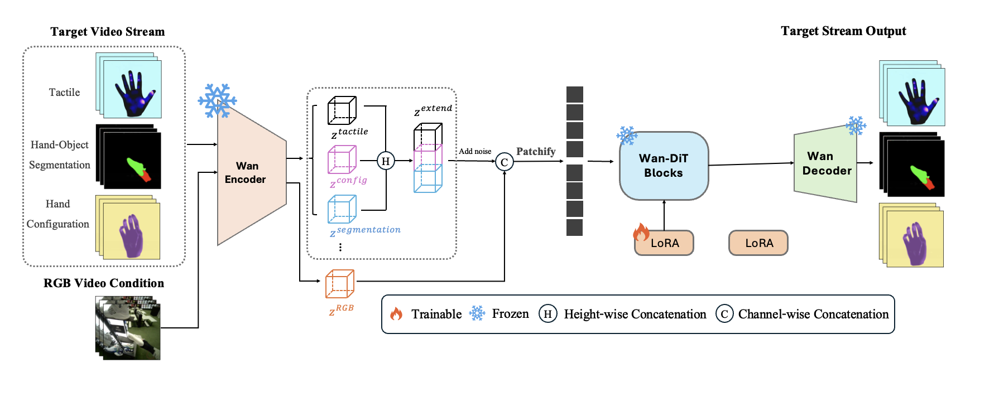

GeneratedGT
Video Generators
Can Predict Touch
Tactile Synthesis from Egocentric Video
GeneratedGT
OpenTouch
GeneratedNo GT
Out-of-distribution
Learning to infer touch from vision
Tactile data is expensive to collect. Videos of hands interacting with the world are abundant. We investigate whether the interaction priors of a pretrained video generator can help recover touch from those videos.
Our model adapts Wan2.1-Fun-Control with lightweight LoRA to jointly generate tactile, hand configuration, and hand–object segmentation. Each target is a video stream.
See what the model feels
Held-out OpenTouch
Tactile activity is rendered on a static hand. Brighter regions indicate greater tactile activity.
Choose an interaction10 sequences
More examples and diagnostic views in the full validation gallery ↗
Method overview
Joint generation of tactile, hand configuration, and hand–object segmentation from RGB video.

Joint Prediction
Four stitched examples showing RGB video alongside the predicted output streams.
GeneratedGT
GeneratedGT
GeneratedGT
GeneratedGT
Two Hands Generation
EgoTouch examples with left- and right-hand tactile predictions.
GeneratedGT
GeneratedGT
GeneratedGT
GeneratedGT
A closer look at the results
Browse the original validation gallery for additional examples and tactile error visualizations.